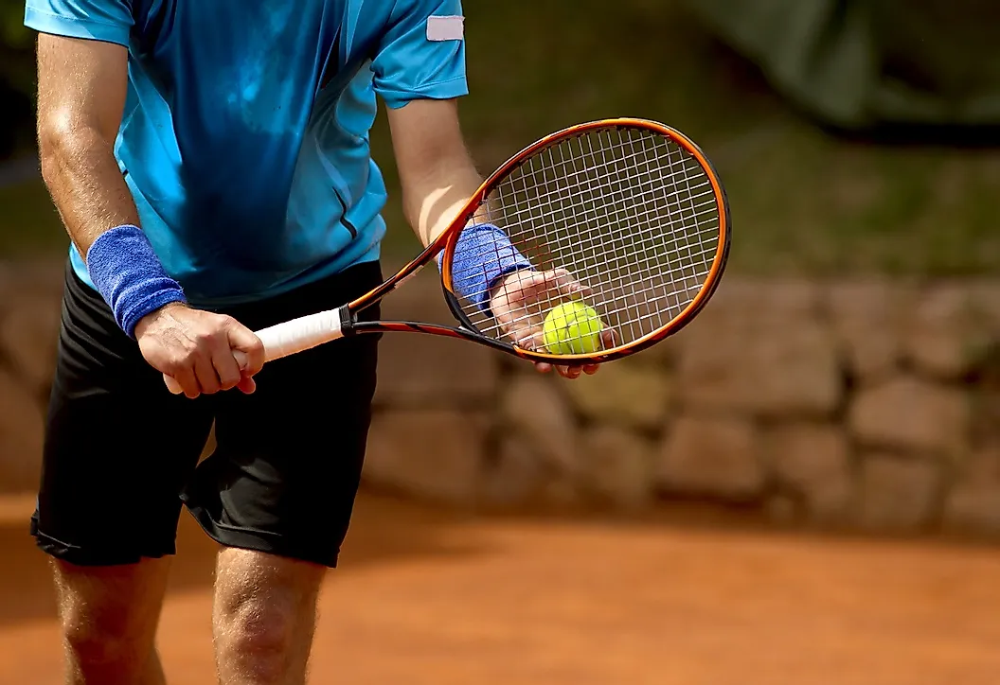
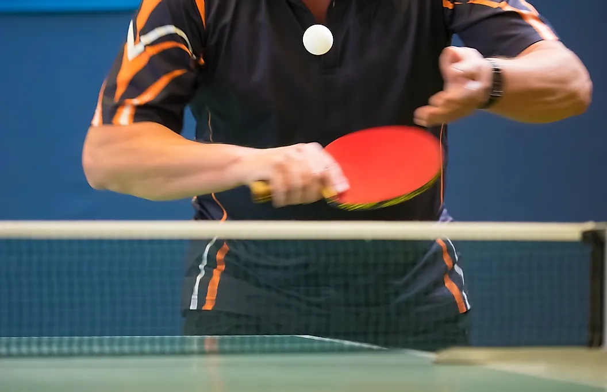

My Favourite Sports
Football (Soccer) – Over 3.5 Billion Fans

Soccer is one of the most popular sports in the world, with over 3.5 billion fans around the globe. Known as football in
many parts of the world, this exciting sport has gained a huge following due to its thrilling gameplay and fast-paced action.
Whether you are a casual spectator or an avid player, there is no denying that soccer is one of the greatest sports out there.
Soccer originated over 3000 years ago when it was first played by the Aztecs. They called it Tchatali and played with a rock
for a ball. In the 2nd and 3rd centuries BCE, the first ball game, called Cuju, took place in China. They played with a leather
ball filled with feathers. In ancient Greece and Rome, ball games were also played, however, not at the Panhellenic Games or in
amphitheaters.
Cricket – Over 2.5 Billion Fans

This exciting and fast-paced sport has a long history, dating back to the 13th century when it was first played on village
greens and in fields across England. Today, cricket is especially popular in Australia and the United Kingdom, but people of
all ages and from all corners of the world enjoy and participate in leagues and tournaments. Whether you are new to cricket
or an experienced player, there are plenty of ways to get involved in this thrilling sport!
Cricket also has a strong social aspect that makes it so popular. This sport is often played as part of a team or community,
bringing people together from all walks of life. Whether you are cheering for your local club or international team, there is
something truly special about bonding over this beloved game.
Hockey – Over 2 Billion Fans
This fast-paced, action-packed sport requires a lot of skill and precision but can be fun for both players and spectators.
Theorigins of hockey date back to the 18th century in England. Over time, different variations of the sport developed as
people played their own versions of the game. Some notable examples include field hockey (played on grass or turf fields),
street hockey (played on asphalt or concrete), and roller hockey (played on roller skates). Ice hockey originated in Canada
and was quickly adopted around the world as the predominant form of this sport.
Tennis – Over 1 Billion Fans

Known for its fast-paced action and high-stakes competition, tennis is a favorite among people of all ages and backgrounds.
Whether you are an avid player or just enjoy watching from the sidelines, there are many reasons why tennis is such a treasured
sport.
Another reason why tennis is so beloved is that it is competitive. From the grand slams like Wimbledon and the US Open to local
club championships and high school tournaments, there are countless opportunities for athletes of all ages and abilities to compete
against each other. Whether you are playing singles or doubles, going up against your opponents can be an exhilarating experience that
pushes you to perform your best.
Table Tennis – Over 850 Million Fans

Part of what makes table tennis so appealing is its simple rules and easy-to-learn techniques. Anyone can pick up a paddle and
start playing, regardless of age or physical ability. Whether you are an experienced player or just starting out, you will find
that table tennis is a fun and challenging sport that anyone can enjoy.
So, if you are looking for an activity that will keep you active and entertained for years to come, then look no further than
table tennis! Whether it is at home with friends or at your local club, you are sure to have a great time playing this exciting
and fun sport.